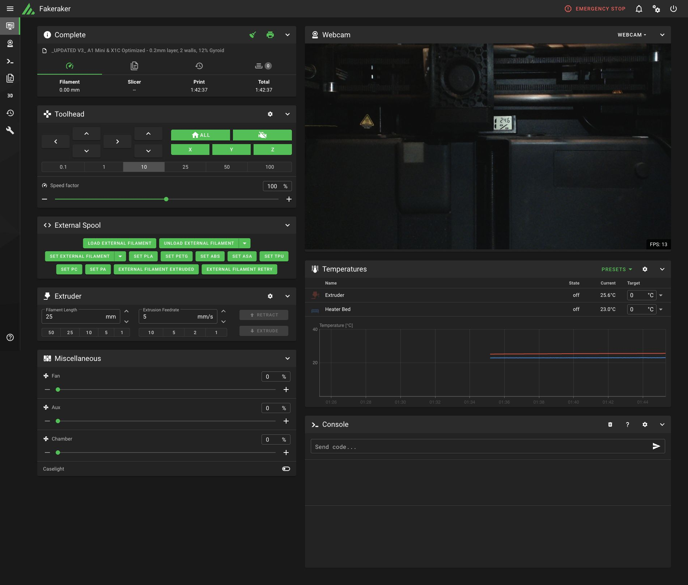

A window into your printer
Temperatures, print state, progress and filenames over LAN MQTT. A shared P1-style camera connection provides MJPEG streams and snapshots.
Monitoring and camera observed on P1SBAMBU HARDWARE / MOONRAKER LANGUAGE
A little shim between two worlds. Shambu connects Bambu Lab printers to Moonraker clients like Mainsail and Fluidd, right on your LAN.
Python · Docker · MIT licensed / Experimental
Stays on your LANDirect MQTT and FTPS connections.
Keeps your firmwareRuns alongside the printer, in Docker.
Brings familiar interfacesMainsail, Fluidd and Retrograde bundled.
THE VIEW FROM THIS SIDE
A Bambu printer, seen through Mainsail.
The interface you know, with a new translator underneath.

A SMALL BRIDGE, ON PURPOSE
Shambu translates a subset of Moonraker requests into Bambu operations. It runs on a computer that can reach your printer, exposing an API on port 7125.
Monitoring, files, camera streams and settings can live in a familiar dashboard. The shim handles the protocol differences behind the scenes.
It does not install Klipper, replace Bambu firmware or turn the printer into a Klipper machine. Existing Klipper macros and slicer profiles are not automatically compatible.
WHAT'S INSIDE
Temperatures, print state, progress and filenames over LAN MQTT. A shared P1-style camera connection provides MJPEG streams and snapshots.
Monitoring and camera observed on P1SBrowse printer files over FTPS, with real .gcode.3mf filenames. The bundled Mainsail build includes a durable 3MF compatibility patch.
Read embedded thumbnails and slicer estimates from sliced 3MF and common G-code formats. Missing fields stay missing, with previews cached in SQLite.
Metadata · thumbnails · plate selectionUI preferences, webcams, external-spool metadata and terminal job records persist in SQLite through a Moonraker-compatible database API.
HTTP + WebSocket settings persistenceWORK IN PROGRESS, OUT IN THE OPEN
The development printer is a P1S. A code path or a passing mock test is only part of the story; physical behaviour needs observation.
LAN monitoring and the P1S camera path. Settings persistence. File listing, metadata and previews. Validation details live in the README.
Remote print start remains unresolved on the observed P1S firmware. Heater semantics, motion and other controls need further hardware acceptance testing.
A subset of Moonraker, fixed macro handlers, and incomplete model coverage. No general Klipper/Jinja macro engine or validated AMS/AFC UI integration.
GET STARTED
You'll need Docker, a printer reachable from the container, its serial number and its LAN access code. Start with the documented LAN-mode setup.
Clone the repository and open its directory.
Create .env with your host, access code, serial and model. Follow the configuration example ↗.
Create the persistence files, build the image and run it using the documented port and volume mappings.
git clone https://github.com/justinh-rahb/bambu-moonraker-shim.git
cd bambu-moonraker-shim.env before building or running.Intended for a trusted LAN; the API currently has no authentication. This unofficial project is unsupported by Bambu Lab, and firmware changes may affect compatibility.
Mock mode simulates printer state with local file operations. The README includes a separate container command that clears printer credentials and disables the camera. Mock behaviour does not validate physical controls.
Run the mock example ↗The shim can run with Python 3.11 and the repository's requirements. You'll need a separately hosted UI; the Python server serves the API. The bundled Mainsail patch is applied by the Docker build.
Python setup instructions ↗OPEN SOURCE / MIT
Printer quirks, careful testing and contributions welcome.